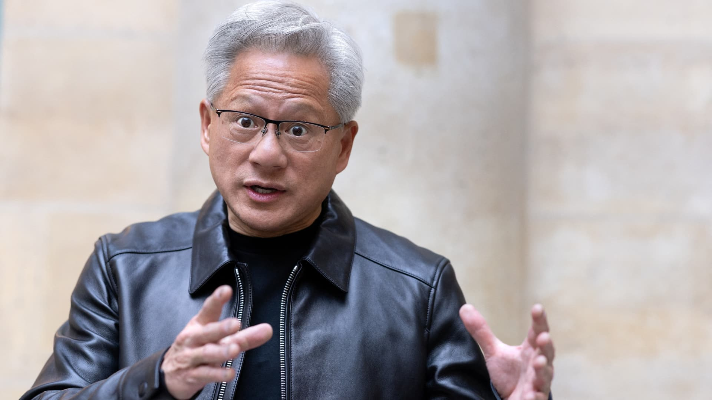
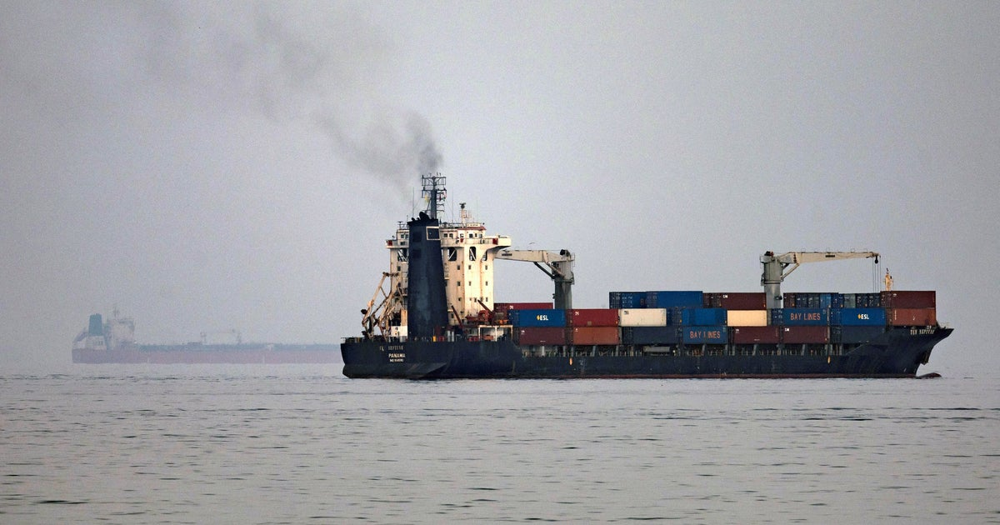
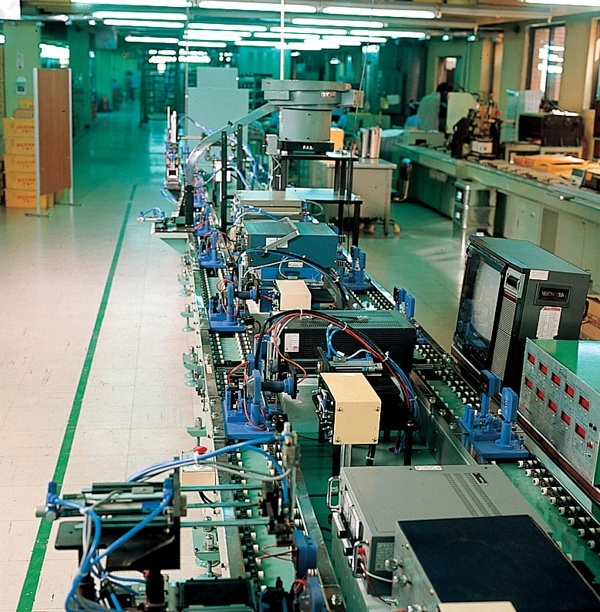

Daily briefing: 23 October 2026
- Hours after agreeing to November talks, Russia and Ukraine hit each other’s capitals; Putin ruled out a short ceasefire.
- Jensen Huang told CNBC he sees no 2029 memory glut and said US export rules sped up China’s chip build-out.
- Iran said seven tankers were damaged in Hormuz; Brent jumped above $112 as Trump called the reports fake.
- Samsung, LG Innotek and USI added billions for packaging substrates and optical modules in Vietnam.
1. Talks agreed, then Kyiv and Moscow are hit overnight
Less than a day after Putin told Steve Witkoff that Russia was ready in principle to restart US–Russia–Ukraine talks next month, both sides traded heavy overnight attacks. Ukraine said Russia fired at least 21 ballistic missiles across 12 regions; two people were killed and 34 injured in the Kyiv region, five of them children. Zelensky said cluster warheads hit the capital’s historic centre. Russia said it downed hundreds of Ukrainian drones aimed at Moscow; at least two people were killed on the Russian side.
On Russian television on Thursday, Putin confirmed readiness for November talks but said the goal is security for Russia and Ukraine after a final peace, “not as a result of a temporary ceasefire.” He also backed Witkoff’s line that the agenda should cover European security as a whole, and again called eastern Ukraine “historically Russian land.” Zelensky said the ballistic response showed no real change in Moscow’s attitude and pressed allies for more air defence.
Separately, NATO said Ukraine can now buy through the alliance’s central procurement agency under a Security Cooperation Support Partnership with Belgium, Luxembourg, Norway, Sweden, the UK and NATO headquarters — deeper industrial access even as Trump still opposes Ukrainian NATO membership.
Sources: DW, Reuters via Investing.com, NBC / Reuters
2. Huang: no 2029 memory glut — “you can always use more”

On the sidelines of GTC Berlin, Jensen Huang told CNBC he does not expect a memory oversupply by 2029, pushing back on a South Korean opinion column that warned of a “flood of new supply” and a red-ocean market. “You can always use more of it,” he said of memory, adding that HBM stays central and that Nvidia’s use of LPDDR in data centres has already delivered roughly 2× better energy efficiency than alternatives.
Memory shares had sold off on glut fears and on CXMT’s efficiency claims. Asked about buying Chinese memory, Huang said Nvidia is “open-minded” and works with Chinese firms elsewhere in the supply chain. He also argued US export controls “definitely accelerated” China’s push to nationalise semiconductor manufacturing — while insisting American tech remains ready to compete.
The same day Nvidia launched Minerva, an AIOps layer that stitches GPU, network, storage and workload telemetry into a knowledge graph for AI-factory yield. Partners including IREN, IBM, Lambda and Tesla plan to deploy it; Dell, Lenovo and Supermicro will offer it in their AI-factory stacks.
Sources: CNBC, Nvidia Blog
3. Seven tankers damaged in Hormuz; Brent above $112

Iranian state media said seven oil tankers were damaged overnight in or near the Strait of Hormuz — struck or hitting naval mines — possibly the largest single-day toll of vessels since the Iran war began on 28 February. The IRGC Navy later claimed attacks on four ships for using what Tehran calls an “illegal route,” and said three others hit mines on the southern track hugging Oman that the US has used for escorted transits.
Brent rose about 4% to around $112–$113 a barrel, levels not seen since mid-May. Trump accused Tehran of inventing “fake hits, mines, and everything else” to drive oil higher before the US midterms, and said more oil is moving through Hormuz than before the conflict. Separately he said Washington is “not negotiating” with Iran and that “something one way or the other” will happen “fairly soon,” with many expecting movement after the election.
4. Billions more for Vietnam chip packaging and optics

Invest Vietnam’s 22 October round-up put fresh numbers on the substrate race. Samsung Electro-Mechanics plans $1.85 billion to expand flip-chip BGA substrate output at its Vietnam plant, aiming to finish construction and start operations by June 2030 for AI servers and high-performance processors. LG Innotek is finalising a $1 billion substrate factory in Hải Phòng — its first outside South Korea — with trial production targeted for Q3 2027 and mass production mid-2028.
ASE’s USI Shanghai approved another $120 million for Hải Phòng as it builds toward 100,000 silicon-photonics optical transceiver modules a month for data-centre and AI links. September electronics, computer and components imports hit $27.1 billion, up 93.7% year on year; nine-month imports reached $197 billion, underscoring how fast Vietnam’s role in advanced packaging and materials is scaling.
Sources: Invest Vietnam